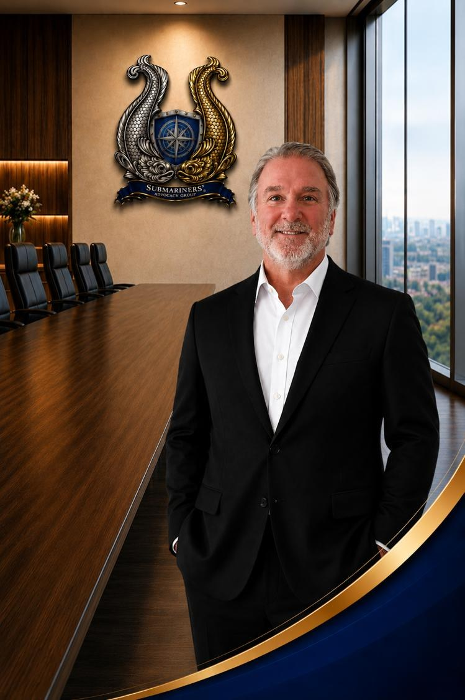

Chief Financial Officer / Treasurer
Dana Widmayer
Dana Widmayer serves as the Chief Financial Officer (CFO) for the Submariners’ Advocacy Group (SAG), where he supports the organization’s financial stewardship, operational accountability, and long-term sustainability initiatives. In this role, he helps oversee financial planning, fiscal compliance, and organizational resource management in support of SAG’s mission to advocate for U.S. Navy Submariners, veterans, and their families.
A proud member of the Silent Service community, Dana previously served aboard USS LEWIS AND CLARK (SSBN 644), where he gained firsthand experience in the operational demands, discipline, and unique culture of submarine service. His connection to the Submarine Force continues to shape his commitment to supporting fellow Submariners and advocating for the long-term well-being of the undersea warfare community.
Throughout his professional career, Dana has built extensive experience in financial management, administrative operations, and organizational support. His background includes leadership in budgeting, financial oversight, reporting, and business operations, bringing both precision and professionalism to the nonprofit sector.
As part of SAG’s executive leadership team, Dana plays an important role in supporting the organization’s continued growth and development as it expands its advocacy efforts, member services, outreach initiatives, and national visibility. His commitment to accountability, professionalism, and mission-focused service helps strengthen SAG’s ability to support the Submarine community and advocate for issues affecting current and former Submariners.
Dana’s dedication to supporting the Submarine Force community reflects SAG’s core values of integrity, professionalism, and service. Through his work behind the scenes, he contributes to the organizational foundation necessary to sustain effective advocacy and long-term impact for the Silent Service community.